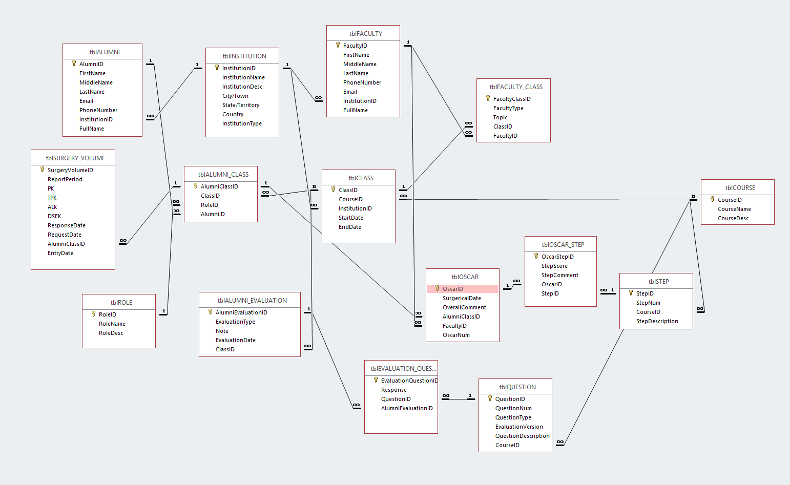

Key Features
Access database
Our Access database organizes and stores SightLife's data in a controlled and centralized location. Data types are controlled, and general formatting is enforced. Most of all, in building a normalized database, we allow SightLife to easily query their data in meaningful and impactful ways. Our database saves SightLife time building and keeping track of Excel sheets, as well as time analyzing and manually asking questions of their data. Having everything stored in one place, where queries can be easily built and run, allows SightLife the time and focus needed to sooner eliminate corneal blindness worldwide. Our team developed numerous queries in Access, to be imported in Power BI to easily create dashboards and visualizations answering pertinent questions.
Access Forms
Our forms we built in Access directly solve the issues SightLife faced surrounding data insertion and accuracy. The forms we built ensure that the right data is collected, in the right place, in the right format. Being user friendly, our forms can be easily used by various people from SightLife, regardless of their experience and knowledge of technology. Our form system also ensures that other data isn't altered, since only one section of data is inserted at once. This further protects the accuracy of SightLife's data. Furthermore, it is much easier for people at SightLife to insert into our forms than craft insert statements or enter into the datasheets of the Access Database. These forms provide a clean and simple segueway for SightLife to interact with our Access Database.
Power BI Visualizations
Our visualizations, combined with queries built in the Access database, provide valuable answers to questions SightLife had about their data. Previously, answering these questions would have taken a lot of manual work, which was not feasibly for SightLife to perform. Our services allow SightLife to seamlessly and recurringly ask questions of their data and get accurate responses fast. The most important questions SightLife wanted answers to were year over year growth in surgical volumes, and the count for number of surgeons trained. Other valuable answers SightLife wanted were which classes have highest and lowest year over year growth for alumni, percent breakdown of participants by institution type, what surgeons are doing more surgeries post course than pre course, as well as more questions about comparisons of scores/surgeries, counts, minimum/maximum scores, etc.
Product Screenshots
Access database
The Entity Relationship Diagram of our Access Database, showing how the data is organized in tables, with attributes.
Access Forms


Our user-friendly forms make inserting data into our database accurate and easy.
Power BI Visualizations


Some of our Power BI visualizations, answering questions such about class counts, year over year change in surgical volumes, score comparisons, year over year growth for alumni, minimum scored steps, and more.